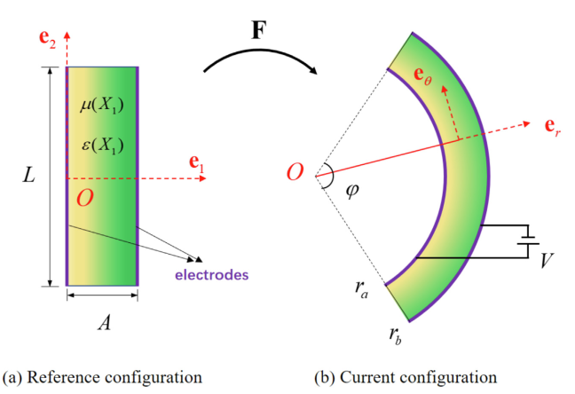
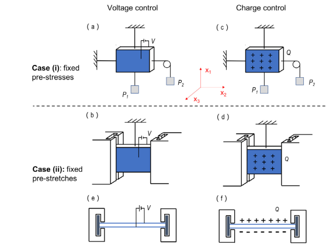

01
Nonlinear Mechanics and Finite Elasticity of Soft Materials
Constitutive modeling, finite deformation, and incremental mechanics of dielectric elastomers, magneto-active hydrogels, and fiber-reinforced electroactive materials.
Related Publications (all as first or corresponding author):
[AMSS2026]
[EML2018]
[EML2021]
[IJNLM2019]

